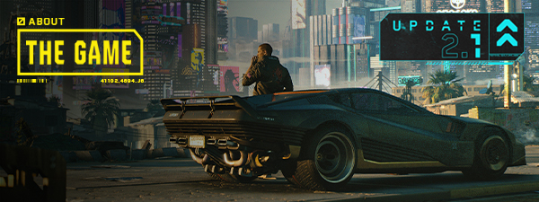
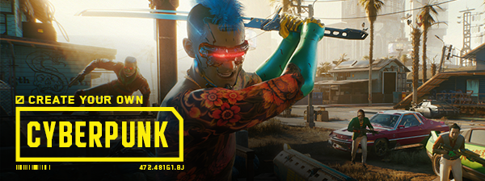
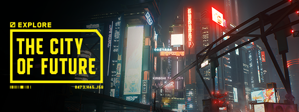
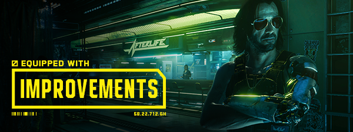
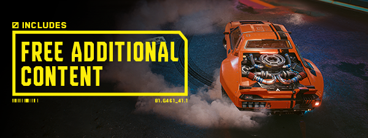

Game Reviews
Cyberpunk 2077: Phantom Liberty

The latest expansion for Cyberpunk 2077 offers a gripping storyline, new characters, and an improved gameplay experience. It's a must-play for fans of the original game.
ABOUT THIS GAME

Cyberpunk 2077 is an open-world, action-adventure RPG set in the megalopolis of Night City, where you play as a cyberpunk mercenary wrapped up in a do-or-die fight for survival. Improved and featuring all-new free additional content, customize your character and playstyle as you take on jobs, build a reputation, and unlock upgrades. The relationships you forge and the choices you make will shape the story and the world around you. Legends are made here. What will yours be?

IMMERSE YOURSELF WITH UPDATE 2.1
Night City feels more alive than ever with the free Update 2.1! Take a ride on the fully functional NCART metro system, listen to music as you explore the city with the Radioport, hang out with your partner in V's apartment, compete in replayable races, ride new vehicles, enjoy improved bike combat and handling, discover hiddens secrets and much, much more!

CREATE YOUR OWN CYBERPUNK
Become an urban outlaw equipped with cybernetic enhancements and build your legend on the streets of Night City.

EXPLORE THE CITY OF THE FUTURE
Night City is packed to the brim with things to do, places to see, and people to meet. And it's up to you where to go, when to go, and how to get there.
BUILD YOUR LEGEND
Go on daring adventures and build relationships with unforgettable characters whose fates are shaped by the choices you make.

EQUIPPED WITH IMPROVEMENTS
Experience Cyberpunk 2077 with a host of changes and improvements to gameplay and economy, the city, map usage, and more.

CLAIM EXCLUSIVE ITEMS
Claim in-game swag & digital goodies inspired by CD PROJEKT RED games as part of the My Rewards program.
Resident Evil Village

Resident Evil Village continues the survival horror legacy with stunning visuals, intense gameplay, and a captivating story. Don't miss this latest entry in the iconic series.
ABOUT THIS GAME
Experience survival horror like never before in the eighth major installment in the storied Resident Evil franchise - Resident Evil Village.
Set a few years after the horrifying events in the critically acclaimed Resident Evil 7 biohazard, the all-new storyline begins with Ethan Winters and his wife Mia living peacefully in a new location, free from their past nightmares. Just as they are building their new life together, tragedy befalls them once again.
First-Person Action – Players will assume the role of Ethan Winters and experience every up-close battle and terrifying pursuit through a first-person perspective.
Familiar Faces and New Foes - Chris Redfield has typically been a hero in the Resident Evil series, but his appearance in Resident Evil Village seemingly shrouds him in sinister motives. A host of new adversaries inhabiting the village will relentlessly hunt Ethan and hinder his every move as he attempts to make sense of the new nightmare he finds himself in.
Red Dead Redemption 2

ABOUT THIS GAME
America, 1899.
Arthur Morgan and the Van der Linde gang are outlaws on the run. With federal agents and the best bounty hunters in the nation massing on their heels, the gang must rob, steal and fight their way across the rugged heartland of America in order to survive. As deepening internal divisions threaten to tear the gang apart, Arthur must make a choice between his own ideals and loyalty to the gang who raised him.
Now featuring additional Story Mode content and a fully-featured Photo Mode, Red Dead Redemption 2 also includes free access to the shared living world of Red Dead Online, where players take on an array of roles to carve their own unique path on the frontier as they track wanted criminals as a Bounty Hunter, create a business as a Trader, unearth exotic treasures as a Collector or run an underground distillery as a Moonshiner and much more.
With all new graphical and technical enhancements for deeper immersion, Red Dead Redemption 2 for PC takes full advantage of the power of the PC to bring every corner of this massive, rich and detailed world to life including increased draw distances; higher quality global illumination and ambient occlusion for improved day and night lighting; improved reflections and deeper, higher resolution shadows at all distances; tessellated tree textures and improved grass and fur textures for added realism in every plant and animal.
Red Dead Redemption 2 for PC also offers HDR support, the ability to run high-end display setups with 4K resolution and beyond, multi-monitor configurations, widescreen configurations, faster frame rates and more.
No Man's Sky

ABOUT THIS GAME
Inspired by the adventure and imagination that we love from classic science-fiction, No Man's Sky presents you with a galaxy to explore, filled with unique planets and lifeforms, and constant danger and action.
In No Man's Sky, every star is the light of a distant sun, each orbited by planets filled with life, and you can go to any of them you choose. Fly smoothly from deep space to planetary surfaces, with no loading screens, and no limits. In this infinite procedurally generated universe, you'll discover places and creatures that no other players have seen before - and perhaps never will again.
Now including...
Play with all major updates since launch: Foundation, Pathfinder, Atlas Rises, NEXT, The Abyss, Visions, the 2.0 BEYOND update, Synthesis, Living Ship, Exo Mech, Desolation and the 3.0 update, ORIGINS, Next Generation, Companions, Expeditions, Prisms, Frontiers, Sentinel, Outlaws, Endurance, Waypoint (4.0), Fractal, Interceptor, Echoes, Omega, Orbital and Worlds Part I (5.0).
An epic voyage to the centre of a shared universe awaits, allowing you to explore, trade, fight and survive alone or with friends.
Embark on an epic voyage
At the centre of the galaxy lies a irresistible pulse which draws you on a journey towards it to learn the true nature of the cosmos. But, facing hostile creatures and fierce pirates, you'll know that death comes at a cost, and survival will be down to the choices you make over how you upgrade your ship, your weapon and suit.
Find your own destiny
Your voyage through No Man's Sky is up to you. Will you be a fighter, preying on the weak and taking their riches, or taking out pirates for their bounties? Power is yours if you upgrade your ship for speed and weaponry.
Or a trader? Find rich resources on forgotten worlds and exploit them for the highest prices. Invest in more cargo space and you'll reap huge rewards.
Or perhaps an explorer? Go beyond the known frontier and discover places and things that no one has ever seen before. Upgrade your engines to jump ever farther, and strengthen your suit for survival in toxic environments that would kill the unwary.
Share your journey
The galaxy is a living, breathing place. Trade convoys travel between stars, factions vie for territory, pirates hunt the unwary, and the police are ever watching. Every other player lives in the same galaxy, and you can choose to share your discoveries with them on a map that spans known space. Perhaps you will see the results of their actions as well as your own.
The Witcher 3: Wild Hunt

ABOUT THIS GAME
You are Geralt of Rivia, mercenary monster slayer. Before you stands a war-torn, monster-infested continent you can explore at will. Your current contract? Tracking down Ciri — the Child of Prophecy, a living weapon that can alter the shape of the world.
Updated to the latest version, The Witcher 3: Wild Hunt comes with new features and items, including a built-in Photo Mode, swords, armor, and alternate outfits inspired by The Witcher Netflix series — and more!
God of War

ABOUT THIS GAME
Enter the Norse realm
His vengeance against the Gods of Olympus years behind him, Kratos now lives as a man in the realm of Norse Gods and monsters. It is in this harsh, unforgiving world that he must fight to survive… and teach his son to do the same.
Grasp a second chance
Kratos is a father again. As mentor and protector to Atreus, a son determined to earn his respect, he is forced to deal with and control the rage that has long defined him while out in a very dangerous world with his son.
Journey to a dark, elemental world of fearsome creatures
From the marble and columns of ornate Olympus to the gritty forests, mountains and caves of pre-Viking Norse lore, this is a distinctly new realm with its own pantheon of creatures, monsters and gods.
Engage in visceral, physical combat
With an over the shoulder camera that brings the player closer to the action than ever before, fights in God of War™ mirror the pantheon of Norse creatures Kratos will face: grand, gritty and grueling. A new main weapon and new abilities retain the defining spirit of the God of War series while presenting a vision of conflict that forges new ground in the genre.
Horizon Forbidden West

ABOUT THIS GAME
Join Aloy as she braves a majestic but dangerous new frontier that holds mysterious new threats. This Complete Edition allows you to enjoy the critically acclaimed Horizon Forbidden West on PC in its entirety with bonus content, including the Burning Shores story expansion that picks up after the main game.
Explore distant lands, fight bigger and more awe-inspiring machines, and encounter astonishing new tribes as you return to the far-future, post-apocalyptic world of Horizon.
The land is dying. Vicious storms and an unstoppable blight ravage the scattered remnants of humanity while fearsome new machines prowl their borders, and life on Earth is hurtling toward another extinction.
It's up to Aloy to uncover the secrets behind these threats and restore order and balance to the world. Along the way, she must reunite with old friends, forge alliances with warring new factions and unravel the legacy of the ancient past.
ELDEN RING

ABOUT THIS GAME
THE NEW FANTASY ACTION RPG.
Rise, Tarnished, and be guided by grace to brandish the power of the Elden Ring and become an Elden Lord in the Lands Between.
A Vast World Full of Excitement
A vast world where open fields with a variety of situations and huge dungeons with complex and three-dimensional designs are seamlessly connected. As you explore, the joy of discovering unknown and overwhelming threats await you, leading to a high sense of accomplishment.
Create your Own Character
In addition to customizing the appearance of your character, you can freely combine the weapons, armor, and magic that you equip. You can develop your character according to your play style, such as increasing your muscle strength to become a strong warrior, or mastering magic.
An Epic Drama Born from a Myth
A multilayered story told in fragments. An epic drama in which the various thoughts of the characters intersect in the Lands Between.
Unique Online Play that Loosely Connects You to Others
In addition to multiplayer, where you can directly connect with other players and travel together, the game supports a unique asynchronous online element that allows you to feel the presence of others.
Grand Theft Auto V

ABOUT THIS GAME
When a young street hustler, a retired bank robber and a terrifying psychopath find themselves entangled with some of the most frightening and deranged elements of the criminal underworld, the U.S. government and the entertainment industry, they must pull off a series of dangerous heists to survive in a ruthless city in which they can trust nobody, least of all each other.
Grand Theft Auto V for PC offers players the option to explore the award-winning world of Los Santos and Blaine County in resolutions of up to 4k and beyond, as well as the chance to experience the game running at 60 frames per second.
The game offers players a huge range of PC-specific customization options, including over 25 separate configurable settings for texture quality, shaders, tessellation, anti-aliasing and more, as well as support and extensive customization for mouse and keyboard controls. Additional options include a population density slider to control car and pedestrian traffic, as well as dual and triple monitor support, 3D compatibility, and plug-and-play controller support.
Grand Theft Auto V for PC also includes Grand Theft Auto Online, with support for 30 players and two spectators. Grand Theft Auto Online for PC will include all existing gameplay upgrades and Rockstar-created content released since the launch of Grand Theft Auto Online, including Heists and Adversary modes.
The PC version of Grand Theft Auto V and Grand Theft Auto Online features First Person Mode, giving players the chance to explore the incredibly detailed world of Los Santos and Blaine County in an entirely new way.
Grand Theft Auto V for PC also brings the debut of the Rockstar Editor, a powerful suite of creative tools to quickly and easily capture, edit and share game footage from within Grand Theft Auto V and Grand Theft Auto Online. The Rockstar Editor’s Director Mode allows players the ability to stage their own scenes using prominent story characters, pedestrians, and even animals to bring their vision to life. Along with advanced camera manipulation and editing effects including fast and slow motion, and an array of camera filters, players can add their own music using songs from GTAV radio stations, or dynamically control the intensity of the game’s score. Completed videos can be uploaded directly from the Rockstar Editor to YouTube and the Rockstar Games Social Club for easy sharing.
Soundtrack artists The Alchemist and Oh No return as hosts of the new radio station, The Lab FM. The station features new and exclusive music from the production duo based on and inspired by the game’s original soundtrack. Collaborating guest artists include Earl Sweatshirt, Freddie Gibbs, Little Dragon, Killer Mike, Sam Herring from Future Islands, and more. Players can also discover Los Santos and Blaine County while enjoying their own music through Self Radio, a new radio station that will host player-created custom soundtracks.
Special access content requires Rockstar Games Social Club account. Visit http://rockstargames.com/v/bonuscontent for details.
Apex Legends

ABOUT THIS GAME
Conquer with character in Apex Legends, a free-to-play* Hero shooter where legendary characters with powerful abilities team up to battle for fame & fortune on the fringes of the Frontier.
Master an ever-growing roster of diverse Legends, deep-tactical squad play, and bold, new innovations that go beyond the Battle Royale experience — all within a rugged world where anything goes. Welcome to the next evolution of Hero Shooter.